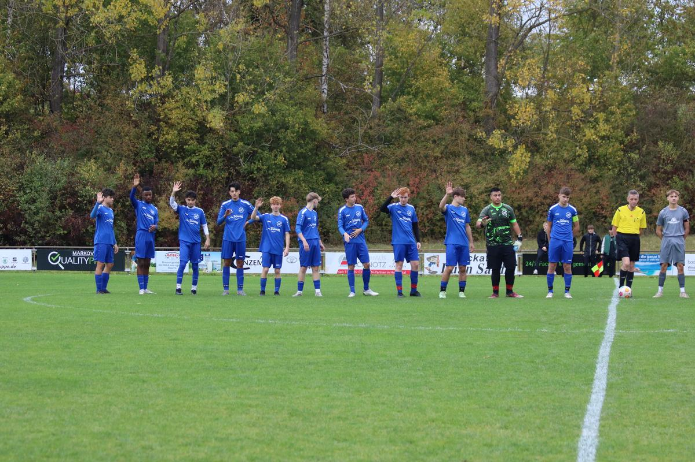

SGM TSV Hessental vs. SGM ABI A (0:2)
Das nächste Aufsteiger Duell stand an, wir waren zu Gast im Hessental gegen die SGM TSV Hessental/TSV Sulzdorf. Die Tabellensituation vor dem Spiel, die Hausherren auf Platz 7 und wir auf Platz 3. Schaffen wir es der kleinen Favoritenrolle gerecht zu werden ? Am Ende müssen wir ein klares Naaaajaaaa, als Antwort nehmen. Entgegen der vergangenen Wochen schafften wir es nicht wirklich unser Spiel aufzuziehen, kaum längere Ballbesitzphasen, was zu einem recht zerfahrenen Spiel in den Anfangsminuten sorgte, trotzdem hatten wir durch Eyüp und Enis drei gute Torchancen und auch Philipp kam nach einem Standard frei zum Abschluss, allerdings fehlte und die nötige Stärke im Abschluss. Unser Gegner kam auch in den Anfangsminuten zu einigen Chancen, nach langen Bällen schafften sie es in unseren 16er zu kommen, wo Alpay heute klar der Herr im Hause war. Die sich dem Gegner bietenden Chancen parierte er. Mitte der ersten Hälfte als wir zunehmend mehr Kontrolle über das Spiel bekamen, schafften wir es nach zwei genialen Pässen von Lukas und Enis, Andrew frei vor den Torspieler zu schicken und endlich, da war sie, unsere Führung. Mit diesem Treffer gingen wir dann später auch in Unterzahl in die Pause, kurz vor der Halbzeit bekamen wir eine 5 Minütige Zeitstrafe.
In die zweite Hälfte starteten wir auch in Unterzahl, unser Gegner versuchte sich jetzt immer wieder aufzubäumen und den Ausgleich zu erzielen, allerdings ohne zwingende Aktionen. Wir im Gegenzug schafften es immer wieder schnell hinter die Abwehrreihe des Gegners zu kommen, aber im letzten Drittel fehlte dann die bekanntlich Entschlossenheit. Wieder nach einer solchen Situation war es dann Eyüp, der von seinem Gegenspieler nur durch ein Foul gestoppt werden konnte. Den fälligen Freistoß verwandelte dann Finn gekonnt, selbstverständlich waren ausschlaggebend die Worte von Lukas vorher. "Du kannst das !!!" Mit 2:0 endete später auch die Partie. In einem schlechteren Spiel von uns, schaffen wir es dennoch die 3 Punkte mitzunehmen und sind somit immer noch auf Rang 3 der aktuellen Regionenstaffel.
Es spielten: Alpay, Romeo, Lukas, Ryan, Andrew, Finn, Fabi, Enis, Eyüp, Philipp, Eric, Flori, Julius, Jahir und Felix.
Am 28.10. begrüßen wir die SGM TSG Öhringen / Juniorteam TSG/SCM bei uns in Abstatt, Spielbeginn ist um 15:30 Uhr. Über zahlreiche Zuschauer würden wir uns freuen, daher seid ihr Alle recht herzlich eingeladen.